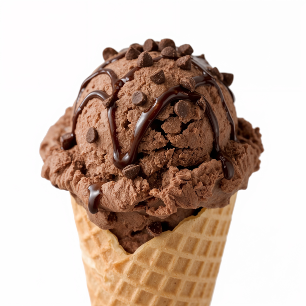

Home
Chocolate Ice Cream

Description
This recipe allows you to make approximately 1 liter delicious chocolate ice cream without any hassle.
Perfect for warm summer days at the pool, and cozy winter evenings with a warm mug of warm tea.
No matter if you're a chocolate lover, ice cream lover, or both, you will love the results of making this cold treat.
Ingredients
- 1-2 Vanilla beans, cut and scraped out
- 500g Milk
- 500g Cream
- 50g Light honey
- 240g Egg yolk
- 250g Granulated sugar
- 200-250g Dark chocolate
Steps
- Place vanilla bean and seeds in a pot and add milk, cream, and honey.
- Mix egg yolk and sugar fluffily in a separate bowl.
- Warm the cream-mix until it starts boiling, at which point you pour it over into the bowl with egg and sugar and mix thoroughly.
- Poor everything back into the pot.
- Warm the mix carefully under constant mixing until it reaches 85C. It is done when you feel the mix start to thicken.
- Pass the mix through a fine-mesh sieve into a clean bowl.
- Chop the chocolate into as small pieces as possible before using a hand blender to mix them into the warm mix until they have melted.
- Cool the mix down as fast as possible to 4C and refrigerate for 12-24 hours.
- Freeze the ice cream mix using an ice cream machine.